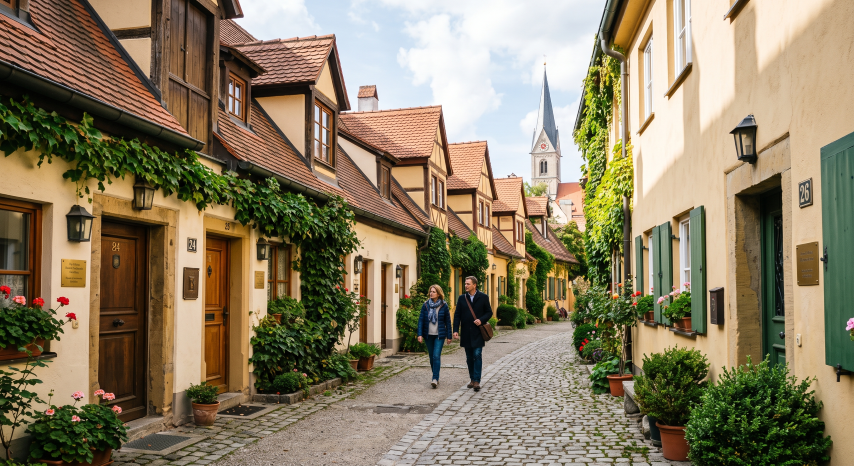
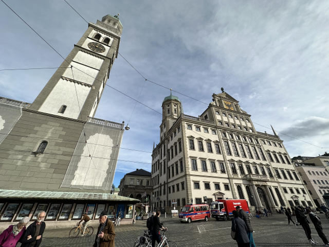
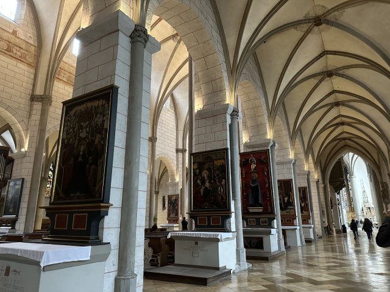
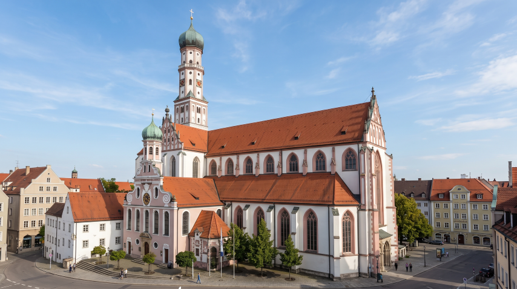
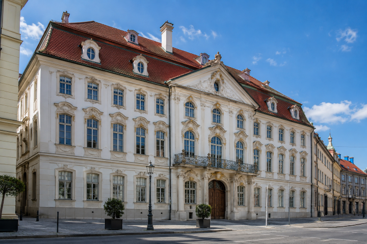

💡 奧格斯堡獨旅行前懶人包
🛑 奧格斯堡獨旅防雷與隱藏密技
💶週日博物館免費
雖然週日商店不開門，但這天卻是逛博物館的黃金日！奧格斯堡部分博物館（如謝茨勒宮）在星期天是免費參觀的，是獨旅者大省預算的完美時機。
🚋市中心免費電車搭到飽
奧格斯堡有一個超級佛心的政策：City Zone 範圍內的大眾運輸完全免費！只要在主火車站（Hauptbahnhof）到市政廳廣場（Rathausplatz）等核心區域內的站牌（標示有 City-Zone），都可以直接跳上電車或公車，不用買票。
🗺️ 必做體驗：奧格斯堡 6 大絕美景點
作為德國最古老的城市之一，奧格斯堡擁有豐富的文藝復興建築與獨特的文化遺產。以下整理出你此生必訪的 6 大經典地標：

歷史建築1. 福格社區 (Fuggerei)
世界上最古老的社會住宅聚落，由富商雅各·福格爾於 1521 年建立。至今仍有居民居住，且年租金維持在象徵性的 0.88 歐元！這裡有如城中之城，爬滿常春藤的黃色連棟建築非常適合散步拍照，還有一個展示早期生活樣貌的小博物館。

歷史建築2. 奧格斯堡市政廳 (Rathaus Augsburg)
阿爾卑斯山以北最重要的文藝復興式建築之一。絕對不能錯過位於二樓的「黃金廳 (Goldener Saal)」，其木造天花板與華麗的壁畫裝飾，展現了奧格斯堡全盛時期的奢華與財富。

宗教建築 / 免費3. 奧格斯堡大教堂 (Augsburger Dom)
融合了羅馬式與哥德式風格的宏偉教堂，擁有世界上最古老的先知彩色玻璃窗。
💭 Bryan 親測：裡面超級巨大、分成很多層，不難想像過往的輝煌！

宗教建築 / 免費4. 聖烏爾里希與阿夫拉教堂 (Basilika St. Ulrich und Afra)
高聳的洋蔥形圓頂是奧格斯堡天際線的標誌。內部明亮寬敞，祭壇裝飾華麗，具有濃厚的巴伐利亞巴洛克風格。

博物館 / 歷史建築5. 謝茨勒宮 (Schaezlerpalais)
保存極為完好的洛可可式宮殿。最令人驚豔的是其華麗無比的宴會大廳，曾接待過法國王后瑪麗·安東妮。目前作為德國巴洛克畫廊使用。
💡 站長提醒：週日免費參觀！
🎉 年度慶典：三大必訪狂歡時刻
感受施瓦本最純粹的熱情
奧格斯堡的節慶更具在地生活氣息，無論是充滿包容力的和平節大餐桌，或是比慕尼黑更親民的民俗節，都能讓你深入體驗巴伐利亞與施瓦本交融的獨特文化。
節慶當天會在市政廳廣場擺設長長的大餐桌（Friedenstafel 和平之桌）。不論是居民還是外地遊客，大家都可以帶著自己的食物坐下來交流分享，氣氛溫暖包容，非常適合一個人前往體驗當地的跨文化對話與友善氛圍。
相比慕尼黑啤酒節的人潮擁擠與搶桌壓力，Plärrer 更在地、親切。獨自前往可以輕鬆逛各類傳統小吃攤、遊樂設施，或走進啤酒大帳篷點一份烤雞與啤酒，感受最純粹的巴伐利亞民俗風情。
天使奏樂（Engelesspiel）：降臨期每逢週末傍晚，市政廳窗戶會打開，由盛裝打扮的「天使」演奏音樂，宛如巨大的音樂盒。市集規模適中，獨自一人手捧熱紅酒、咬著薑餅漫步在中世紀建築群下，氛圍浪漫且安全。
🚆 交通全攻略：城際移動與市區免費區間
📍 從慕尼黑 (Munich) 出發
區域快車 (RE / RB)
適用邦票🛫 起點慕尼黑中央車站 (München Hbf)
🏁 終點奧格斯堡中央車站 (Augsburg Hbf)
⏱️ 時間約 30 - 45 分鐘
⏳ 班距班次非常密集
📍 奧格斯堡市區交通 (SWA / AVV)
佛心政策：City Zone 免費搭乘
奧格斯堡的市區交通由 SWA 與 AVV 營運。最棒的是，從主火車站到最有名的市政廳這段核心區域（City Zone）是完全免費的！只要站牌上有「City-Zone」的標誌，就直接跳上電車或巴士，省去買票的麻煩。
💳 巴伐利亞必備旅遊通票
巴伐利亞邦票 (Bayern Ticket)
適合對象：當天需要前往近郊（如從慕尼黑來奧格斯堡，或前往新天鵝堡等）長途移動的人。
包含內容：當日免費無限次搭乘巴伐利亞邦內「所有」的慢車 (RE, RB)、S-Bahn、U-Bahn、公車與電車（不含 ICE 等高鐵）。
德國月票 (Deutschland-Ticket)
終極省錢大絕
適合對象：行程跨越德國多個邦、旅行超過 3-5 天的旅人。
包含內容：訂閱制（可隨時取消）。一個月內全德國無限次搭乘所有的市內交通與慢車（RE, RB）。
⚠️ 注意：這是訂閱制服務。購買後請務必在規定期限內（通常是當月10號前）手動申請取消次月扣款。
🚄 德鐵官網訂購月票🛏️ 住宿建議：精選安全且高性價比的獨旅避風港
| 🛏️ 住宿飯店 / 青旅 | 🔗 預訂連結 | 💰 平均房價參考 | ⭐ 旅客評分 | 💡 站長為何推薦 |
|---|---|---|---|---|
| Jugendherberge Augsburg / Hostel SLEPS 📍 Google Maps | EUR 35 - 55 / 晚 | 約 8.4 / 10 整潔舒適，位置便利 |
奧格斯堡當地品質穩定的青旅選擇，環境乾淨、員工友善，非常適合獨自旅行者在此落腳探索舊城區。 |
🍝 在地美食指南：施瓦本的家鄉味
🍽️ 必吃美食
有別於慕尼黑的大肉排，奧格斯堡所在的施瓦本地區，有著獨具特色且溫暖人心的麵食文化：
最具代表性的「城市甜點」，奧格斯堡市民甚至常被暱稱為「Datschiburger」。在麵團底上排滿對半切開的新鮮李子烘烤而成，酸甜可口。
施瓦本地區的「德式大餛飩」。用麵皮包入絞肉、菠菜、洋蔥、香草與麵包屑做成的大型方餃，水煮或香煎都十分美味。
發源於此區域的邪惡美食。現刮的新鮮麵條拌入大量高山陳年起司，拉絲濃郁，最後鋪上滿滿酥炸洋蔥絲，是極致的 Comfort Food。
極具家常代表性的傳統主食。將手工麵淋上以微量醋熬煮的濃稠酸鹹燉扁豆，旁邊附上一對脆皮細香腸，風味獨特且飽足。
喜愛嘗試傳統特殊風味的旅客可以挑戰。將牛肚切條炒香後，用肉汁與醋燉煮至軟嫩微酸，通常搭配馬鈴薯或手工麵食用。
🎒 獨旅實戰：友好餐廳與平價清單
以下精選 5 間奧格斯堡特色店鋪，從傳統酒館到甜點名店，非常適合獨旅者造訪：
| 🍴 餐廳名稱 | 💰 價格水平 | 📍 交通位置 | 💡 站長推薦理由 |
|---|---|---|---|
| Restaurant Bayerischer Löwe 📍 在地圖開啟 | 中價位 | 市中心區域 |
提供道地豐盛的巴伐利亞與施瓦本料理，肉類拼盤與起司麵疙瘩都非常受歡迎，是體驗在地傳統美食的好去處。 |
| Bräustüberl zum Thorbräu 📍 在地圖開啟 | 中價位 | 老城區城門旁 |
歷史悠久的啤酒館，自家釀造的啤酒配上傳統德國菜餚，氣氛熱鬧且道地。 |
| Hoppácska 📍 在地圖開啟 | 低價位 | 市區 |
提供特色煙囪捲與創新吃法的輕食店，適合獨旅者買一份邊走邊吃，簡單解決一餐。 |
| Kisharang Étkezde 📍 在地圖開啟 | 中價位 | 市區 |
溫馨的家常菜小館，提供實惠且暖心的在地料理，一個人用餐也感覺非常自在親切。 |
| Molnár's kürtőskalács 📍 在地圖開啟 | 低價位 超人氣甜點 |
市區 |
💡 站長大推
這家是評價最好的煙囪捲店唷！現烤的香氣加上外酥內軟的口感，絕對是散步時的最佳甜點補給。 |
🇩🇪 德國獨旅生存避雷箱
交通：紙本車票必打卡
德國大眾運輸車站沒有閘門，採「榮譽制」，但查票員神出鬼沒且罰款極重。若是購買實體單程票/日票，上車前務必在月台的藍色或黃色小機器「打上時間印記 (Entwerten)」，沒打卡視同逃票！
建議下載 DB Navigator 或地區交通 App 購買電子票，付款後自動啟用，完全不用找機器打卡，還不怕弄丟。
作息：小心週日全面停擺
德國嚴格執行「週日公休法規 (Sonntagsruhe)」。在星期天，所有的超市（包含 Aldi, Rewe）、藥妝店 (dm, Rossmann) 甚至百貨公司全部大門緊閉，街上宛如空城。
獨旅者務必在「週六傍晚前」採買好週末所需的糧食與水。若真的忘記，只能去中央火車站內的少數超市搶購物資。
餐廳：啤酒花園潛規則
巴伐利亞的啤酒花園（Biergarten）通常分兩區：自帶食物區（Brotzeit-Bereich）和點餐服務區。在自帶食物區，你可以合法帶外食進去！
只要在自帶食物區點一杯飲料或啤酒，就可以吃自己帶的超市食物坐上大半天，非常適合省錢又享受氛圍的獨旅者！

Bryan | Europe Solo Guide
「獨旅不是孤單，而是給自己一場完整的自由。」
熱愛穿梭在歐洲老城區的石板路上與壯麗群山間。目前已獨自走訪 41 個歐洲國家，致力於將複雜的交通、住宿與隱藏景點，轉化為有溫度的獨旅攻略。希望這篇文章能幫你省下找資料的時間，把精力留給旅途中的美好。